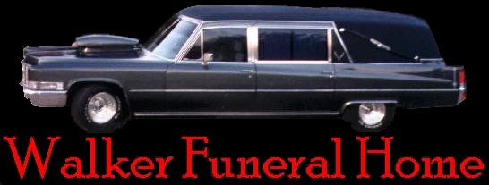
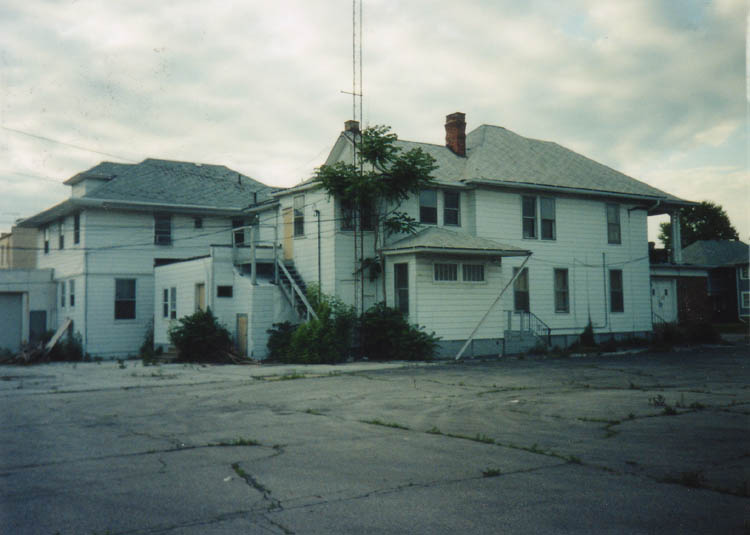
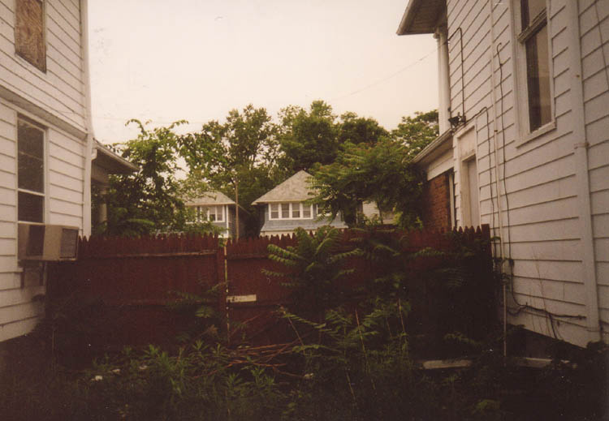
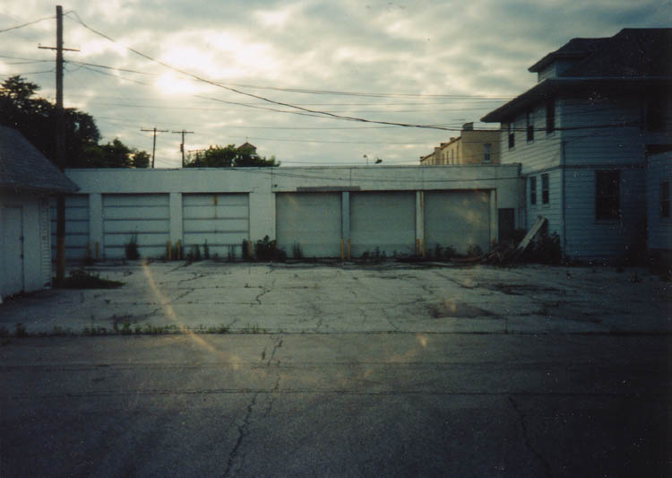
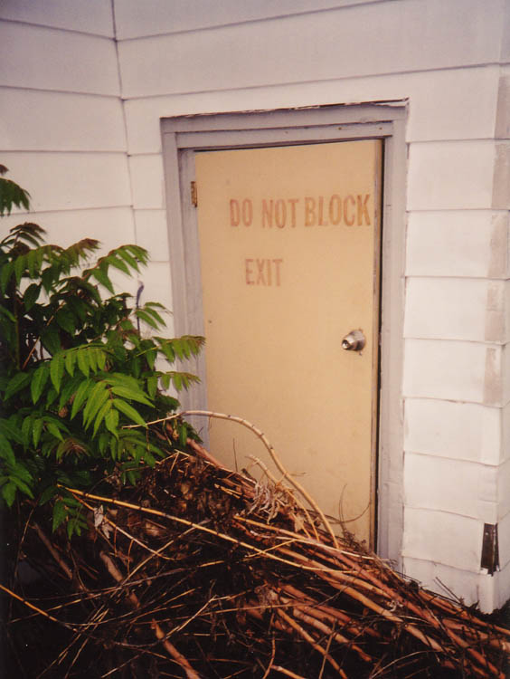
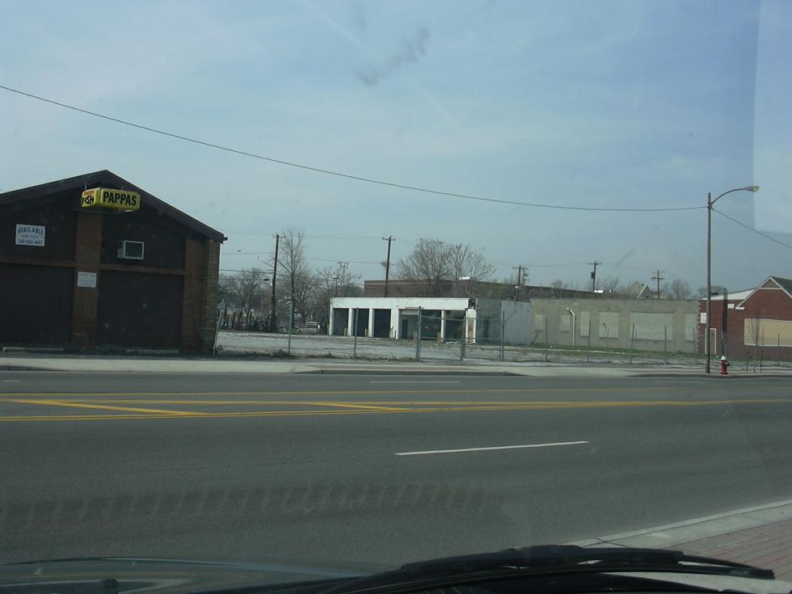

I should state first of all that the abandoned funeral home on this page is neither abandoned nor a funeral home anymore. When I explored it with my friend Hoss in spring 2001 it had most recently been used by an ambulance company. The two white house-like buildings, which stand very close to the intersection of Central and Monroe in Toledo, were shortly thereafter occupied by a new tenant. Not five years later, they were gone. (See the update at the bottom of this page for current status on this late, lamented haunted house.)

At one time this was a funeral home, though, and that is why I heard about it. It seems that every tenant this property has had has reported odd occurrences. Unexplained noises and strange moving shadows are among the weird things that are said to happen here at night. A couple of people have e-mailed me about the Walker Funeral Home. When I was in the area we decided to take a look at it. We were shocked to find it extremely easy to get into and surprisingly untouched inside. The neighborhood certainly isn't the greatest.

Behind the building is a long, six-bay garage that has been used for ambulances and hearses. There wasn't much to see inside these.

One major event in the life of the Walker Funeral Home was the October 29, 1960 plane crash at the Toledo airport which killed twenty-two people, including sixteen players from the Cal Poly San Luis Obispo football team, who had just lost to Bowling Green 50-6. The plane tried to take off in a thick fog but didn't make it 300 feet in the air before the left engine went out, causing the plane to crash into an orchard and split in two. (The sixteen athlete deaths made it America's worst sports-related air tragedy up to that time, but it would not be the last; on November 14, 1970, the entire Marshall College football team was wiped out in a plane crash in Huntington, West Virginia.) Some or all of the bodies of the dead plane crash victims were brought to the Walker Funeral Home temporarily, and they spent the night there under the watch of employees. According to stories I've heard, the ghosts of these young men may have stayed behind. Click here to read an article about the fortieth anniversary of the crash.
There was a lot to see inside the buildings themselves, however, and there were a lot of hauntings to investigate. Details about the ghostly occurrences at the old Walker buildings were supplied to me EMTs and funeral parlor employees who worked there. To read some of their stories, click below.
Or click the door to continue your tour and enter the funeral home.

ENTER
UPDATE: Sometime in 2007, they actually knocked down the double-building structure that used to make up the Walker Funeral Home (and the ambulance company, and the insurance agency). Here's what its berth on Central looks like now, thanks to Nielmot, who contributed the information and the photo:

As you can see, the six-vehicle garage, formerly used for hearses and ambulances, is all that remains, and it's missing its doors. It really is a shame, because this old funeral home really was one of Ohio's best nondescript little haunted houses--full of fascinating historical tidbits and dark goings-on, not to mention paranormal events galore. I suppose it would have been hard to make an argument for preserving it on historical grounds. At any rate, you can still see what it looked like inside, before it disappeared.
Article about the 1960 Cal Poly Plane Crash
Back
forgottenohio@yahoo.com
facebook.com/andy.henderson.319
Sources
Sullivan, Mike. "Tollner Knows What Real Loss is All About." North County Times. October 28, 2000.